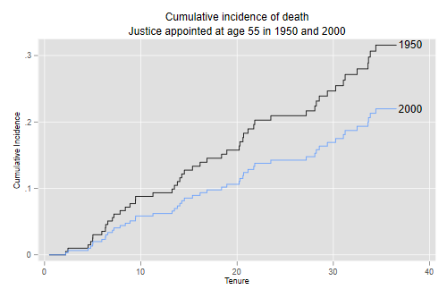
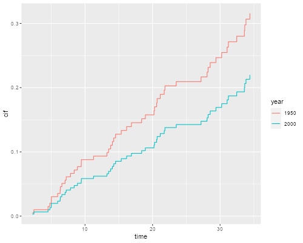

<h2 id="the-fine-and-gray-model">The Fine and Gray Model</h2>
<p>We conclude our competing risk analysis of supreme court tenure by
fitting the Fine and Gray model, which focuses on the sub-hazard of each
risk.</p>
<p>We use the file saved earlier, <a href="justices">see</a>.
Alternatively, you may rebuild the dataset using the first block of code
in that page.</p>

{% include srtabs.html %}

<p>We read the data and recode dates as before. (You can skip this step
if you are runing this code in the same session as the previous
page.)</p>
<pre class='stata'>. use https://grodri.github.io/datasets//justices2, clear
</pre>
<pre class='r'>> justices &lt;- read.csv("https://grodri.github.io/datasets//justices2.csv")
</pre>
<h3 id="fitting-the-model">Fitting the Model</h3>
<p><span class="stata">This model can be fit in Stata using the
<code>stcrreg</code> command, with death as the event of interest as
retirement as the competing event.</span> <span class="r">We fit the
model using the <code>crr</code> function in the <code>cmprsk</code>
package. The function requires a model matrix instead of a model
formula. In our example the matrix is simple, for more general help type
<code>?model.matrix</code>. I specify the codes for the event of
interest and for censoring, although they happen to coincide with the
defaults.</span></p>
<pre class='stata'>. stset tenure, fail(event == 1)

Survival-time data settings

         Failure event: event==1
Observed time interval: (0, tenure]
     Exit on or before: failure

──────────────────────────────────────────────────────────────────────────
        113  total observations
          0  exclusions
──────────────────────────────────────────────────────────────────────────
        113  observations remaining, representing
         50  failures in single-record/single-failure data
  1,887.365  total analysis time at risk and under observation
                                                At risk from t =         0
                                     Earliest observed entry t =         0
                                          Last observed exit t =  36.57221

. stcrreg age year, compete (event == 2)

        Failure _d: event==1
  Analysis time _t: tenure

Iteration 0:   log pseudolikelihood =  -216.0489  
Iteration 1:   log pseudolikelihood = -211.97443  
Iteration 2:   log pseudolikelihood = -211.87323  
Iteration 3:   log pseudolikelihood = -211.87319  
Iteration 4:   log pseudolikelihood = -211.87319  

Competing-risks regression                        No. of obs      =        113
                                                  No. of subjects =        113
Failure event:   event == 1                       No. failed      =         50
Competing event: event == 2                       No. competing   =         54
                                                  No. censored    =          9

                                                  Wald chi2(2)    =      14.84
Log pseudolikelihood = -211.87319                 Prob > chi2     =     0.0006

─────────────┬────────────────────────────────────────────────────────────────
             │               Robust
          _t │        SHR   std. err.      z    P>|z|     [95% conf. interval]
─────────────┼────────────────────────────────────────────────────────────────
         age │   1.007446   .0176847     0.42   0.673     .9733737     1.04271
        year │   .9915572   .0023216    -3.62   0.000     .9870173     .996118
─────────────┴────────────────────────────────────────────────────────────────
</pre>
<pre class='r'>> library(cmprsk)
> fg &lt;- crr(justices$tenure, justices$event, justices[,c("age", "year")],
+     failcode = 1, cencode = 0)
> summary(fg)
Competing Risks Regression

Call:
crr(ftime = justices$tenure, fstatus = justices$event, cov1 = justices[, 
    c("age", "year")], failcode = 1, cencode = 0)

         coef exp(coef) se(coef)      z p-value
age   0.00742     1.007  0.01748  0.424 0.67000
year -0.00848     0.992  0.00233 -3.637 0.00028

     exp(coef) exp(-coef)  2.5% 97.5%
age      1.007      0.993 0.974 1.043
year     0.992      1.009 0.987 0.996

Num. cases = 113
Pseudo Log-likelihood = -212 
Pseudo likelihood ratio test = 13.2  on 2 df,
</pre>
<p>We see that the probability that a judge will die while in the court
doesn’t appear to vary with age at appointment, but decreases with
calendar year of appointment, so judges appointed more recently are less
likely to die while serving in the court.</p>
<h3 id="predicted-cumulative-incidence">Predicted Cumulative
Incidence</h3>
<p>We predict the CIF of death for a justice appointed at age 55
completed years in 1950 and 2000. The code below adds 0.5 to convert to
exact ages and mid years.)</p>
<pre class='stata'>. stcurve, cif at1(age = 55.5 year = 1950.5) at2(age = 55.5 year = 2000.5) ///
>     title("Cumulative incidence of death") xtitle(Tenure) ///
>     subtitle("Justice appointed at age 55 in 1950 and 2000") ///
>     text(.22 38 "2000") text(.316 38 "1950") legend(off)

. graph export justices-ciffg.png, width(500) replace
file justices-ciffg.png saved as PNG format
</pre>
<p></p>
<p><span class="stata"><em>Aside</em>: It is instructive to compute
these curves ‘by hand’. Because <code>predict</code> sets the covariates
to zero, it will be advantageous to center age on 55.5 and year on
1950.5, as we did for the Cox model, so the predicted survival is our
first scenario.</span></p>
<pre class='stata'>. gen agec = age - 55.5

. gen yearc = year - 1950.5

. quietly stcrreg agec yearc, compete(event==2)

. predict cif1950, basecif
</pre>
<p><span class="stata">We know that this model is linear in the
c-log-log scale, so we transform the CIF for 1950, add 50 times the year
coefficient, and then transform back to probabilities.</span></p>
<pre class='stata'>. gen cif2000 = invcloglog( cloglog(cif1950) + 50 * _b[yearc] )
(4 missing values generated)

. sort _t

. twoway line cif1950 _t, c(J) || line cif2000 _t, c(J) legend(off)

. list _t cif1950 cif2000 in -1

     ┌─────────────────────────────────┐
     │        _t    cif1950    cif2000 │
     ├─────────────────────────────────┤
113. │ 36.572212   .3156297   .2198049 │
     └─────────────────────────────────┘
</pre>
<pre class='r'>> nd &lt;- matrix(c(55.5, 55.5, 1950.5, 2000.5), 2, 2)
> cifs &lt;- predict(fg, nd)
> cifd &lt;- data.frame(
+     year = factor(rep(c("1950", "2000"), rep(nrow(cifs),2))),
+     time = c(cifs[,1], cifs[,1]),
+     cif = c(cifs[,2], cifs[,3])
+ )
> library(ggplot2)
> ggplot(cifd, aes(time, cif, color=year)) + geom_step()
> ggsave("justices-ciffgr.png", width = 500/72, height = 400/72, dpi = 72)
> cifs[nrow(cifs),]
[1] 34.4147844  0.3156297  0.2198049
</pre>
<p></p>
<p>We see that the probability of dying while serving in the court is
declining over time net of age at appointment. For a justice appointed
at age 55, the probability would be 31.6% if appointed in 1950 and 22.0%
if appointed in the year 2000, assuming of course that current trends
continue, so the model applies.</p>
<p>Incidence functions can also be computed from Cox models, which in my
view have a clearer interpretation, as shown <a
href="justices2">here</a>. The Cox proportional hazards approach leads
to estimated probabilities of death of 32.8% if appointed in 1950 and
22.6% if appointed in 2000. Both methods agree in estimating the overall
decline as about ten percentage points.</p>
